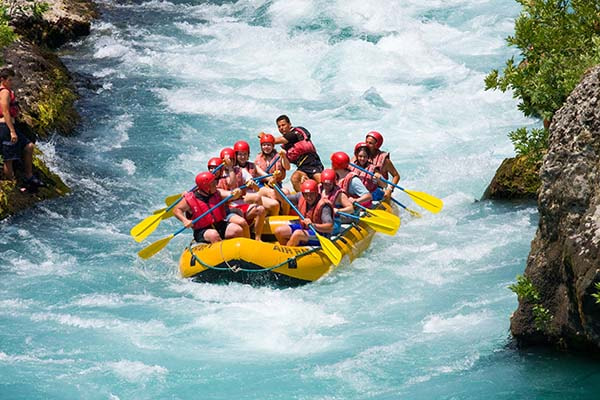
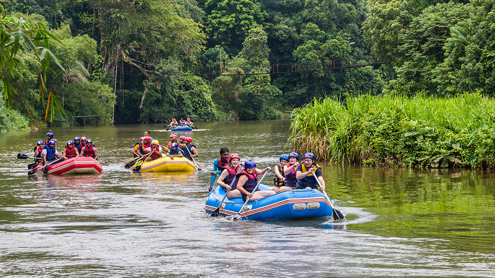

Nossa missão é proporcionar aventuras inesquecíveis, conectando pessoas à natureza com segurança e emoção.

Nossa missão é proporcionar aventuras inesquecíveis, conectando pessoas à natureza com segurança e emoção.
A Rio Abaixo Rafting nasceu da paixão por esportes radicais e pela natureza. Fundada por aventureiros experientes, oferecemos experiências emocionantes em rios incríveis.


